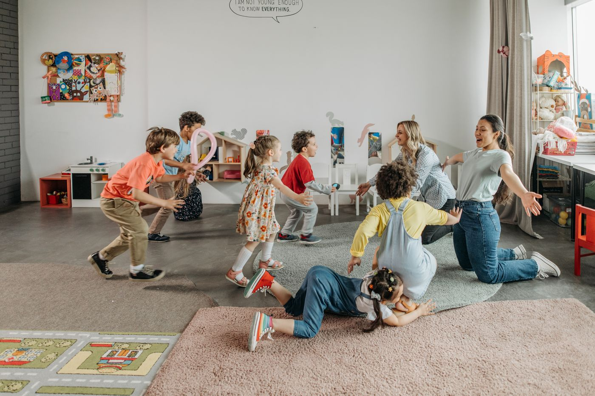
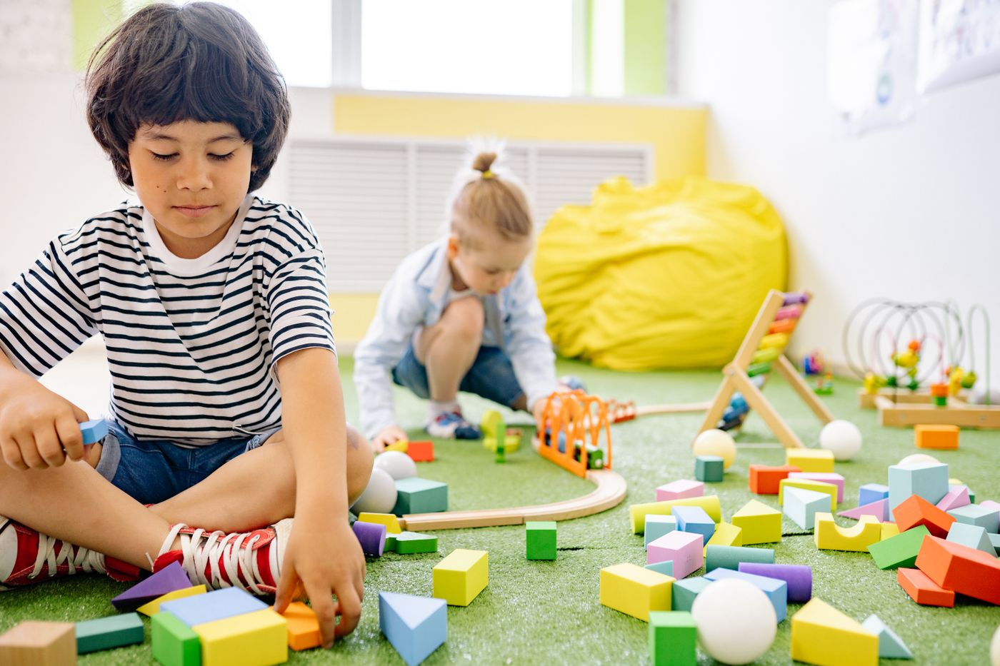
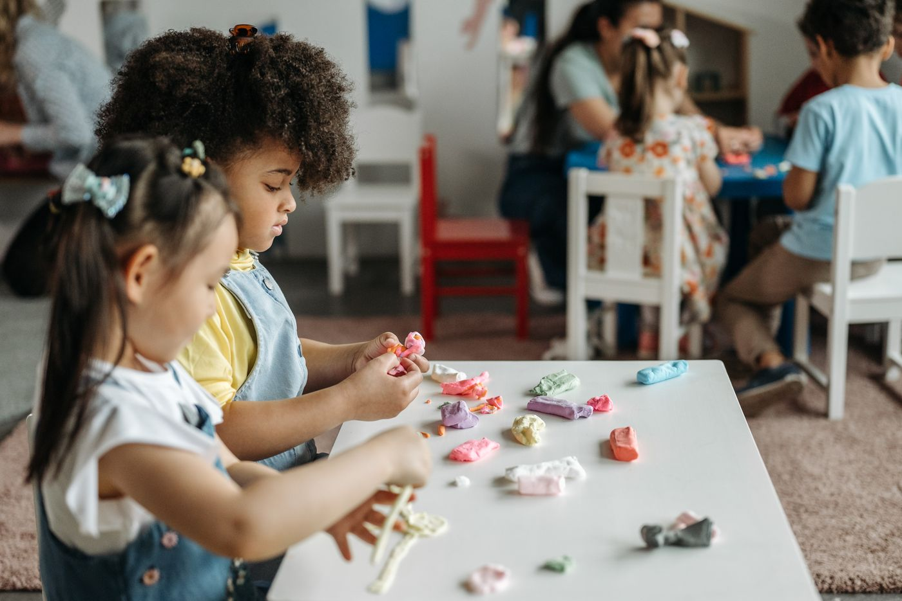

Kids Kabin Day Care Center takes a well-rounded approach to early childhood education, caring for children from 10 weeks to 6 years in a center-based setting.
Call (251) 375-0152
Kids Kabin is a STAR 5 rated center through Alabama Quality Stars (Program Type "Center 5"), recognizing strong quality in early childhood care and education.
From infants to preschoolers, each group gets care matched to where they are.
Welcoming infants from 10 weeks, with gentle routines and close attention.
Busy explorers get room to move, play, and practice new skills.
Children up to 6 years build school readiness through play and learning.

Our days mix guided play, creative projects, and time with friends. Children try new things at their own pace while teachers guide them toward the next step.

Social time, creative play, and early learning all get their turn. The goal is steady growth in every part of your child's day.
Rated 4.8 out of 5 from 26 Meta reviews.
A full center setting with dedicated classrooms, not a home program. Room for every age group to learn and play.
Open Monday through Friday, 7:00 AM to 5:30 PM, built around working families.
The best way to choose is a visit. Call (251) 375-0152 to schedule a tour.
Call to schedule a tour at 27730 Main Street in Daphne. We would love to show you around.
Call (251) 375-0152